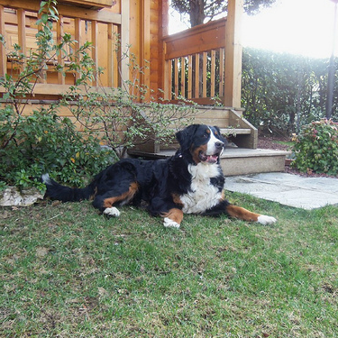
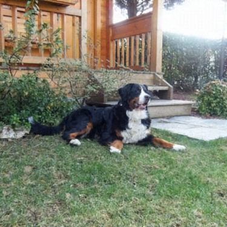

!wget https://hf.co/danjacobellis/walloc/resolve/main/v0.8.0.pth
--2024-09-01 15:11:22-- https://hf.co/danjacobellis/walloc/resolve/main/v0.8.0.pth
Resolving hf.co (hf.co)... 44.212.132.255, 3.210.66.237, 34.198.14.237, ...
Connecting to hf.co (hf.co)|44.212.132.255|:443... connected.
HTTP request sent, awaiting response... 302 Moved Temporarily
Location: https://huggingface.co/danjacobellis/walloc/resolve/main/v0.8.0.pth [following]
--2024-09-01 15:11:22-- https://huggingface.co/danjacobellis/walloc/resolve/main/v0.8.0.pth
Resolving huggingface.co (huggingface.co)... 108.156.211.51, 108.156.211.95, 108.156.211.125, ...
Connecting to huggingface.co (huggingface.co)|108.156.211.51|:443... connected.
HTTP request sent, awaiting response... 302 Found
Location: https://cdn-lfs-us-1.huggingface.co/repos/f3/ba/f3ba06623731c38247420d7019770a013d176a409abc994df4fee215d214a026/71d52a393ba8e34fcb7d10be77749fb9e2904d886ef2af69a4e2acd942c98b11?response-content-disposition=inline%3B+filename*%3DUTF-8%27%27v0.8.0.pth%3B+filename%3D%22v0.8.0.pth%22%3B&Expires=1725480682&Policy=eyJTdGF0ZW1lbnQiOlt7IkNvbmRpdGlvbiI6eyJEYXRlTGVzc1RoYW4iOnsiQVdTOkVwb2NoVGltZSI6MTcyNTQ4MDY4Mn19LCJSZXNvdXJjZSI6Imh0dHBzOi8vY2RuLWxmcy11cy0xLmh1Z2dpbmdmYWNlLmNvL3JlcG9zL2YzL2JhL2YzYmEwNjYyMzczMWMzODI0NzQyMGQ3MDE5NzcwYTAxM2QxNzZhNDA5YWJjOTk0ZGY0ZmVlMjE1ZDIxNGEwMjYvNzFkNTJhMzkzYmE4ZTM0ZmNiN2QxMGJlNzc3NDlmYjllMjkwNGQ4ODZlZjJhZjY5YTRlMmFjZDk0MmM5OGIxMT9yZXNwb25zZS1jb250ZW50LWRpc3Bvc2l0aW9uPSoifV19&Signature=J47lno6oXeOQjVtu2tNHri8P-FRbFSRtjpGQjP%7EtCCXn-tPvbILl0pKHoLlVW6nSEnwwHmRKOHpvRNhTOuz61vcp3XJJIzdyC6IIByZ4gzpT2ZnOtscykijAiD8eKbliegqsqqD1G0owAoEglQx8e7LDoovQuKFTVRFWXRhnCROBo9Tq0BeH376CgviAe4bOCbY7N7nlQV9DMZ50Kc7l0WyN1MesYgsmyNj-yj0OlfQe%7E7zripkG4Qu7c4FTIt2yUOgEDb51ScqyTCj5dD7FhtdamM2rXRVkYgphpGksnaQlgPyzVUPwcbM8TgS-x5L7pZO-jIORBJ08M-L2J-dgVA__&Key-Pair-Id=K24J24Z295AEI9 [following]
--2024-09-01 15:11:22-- https://cdn-lfs-us-1.huggingface.co/repos/f3/ba/f3ba06623731c38247420d7019770a013d176a409abc994df4fee215d214a026/71d52a393ba8e34fcb7d10be77749fb9e2904d886ef2af69a4e2acd942c98b11?response-content-disposition=inline%3B+filename*%3DUTF-8%27%27v0.8.0.pth%3B+filename%3D%22v0.8.0.pth%22%3B&Expires=1725480682&Policy=eyJTdGF0ZW1lbnQiOlt7IkNvbmRpdGlvbiI6eyJEYXRlTGVzc1RoYW4iOnsiQVdTOkVwb2NoVGltZSI6MTcyNTQ4MDY4Mn19LCJSZXNvdXJjZSI6Imh0dHBzOi8vY2RuLWxmcy11cy0xLmh1Z2dpbmdmYWNlLmNvL3JlcG9zL2YzL2JhL2YzYmEwNjYyMzczMWMzODI0NzQyMGQ3MDE5NzcwYTAxM2QxNzZhNDA5YWJjOTk0ZGY0ZmVlMjE1ZDIxNGEwMjYvNzFkNTJhMzkzYmE4ZTM0ZmNiN2QxMGJlNzc3NDlmYjllMjkwNGQ4ODZlZjJhZjY5YTRlMmFjZDk0MmM5OGIxMT9yZXNwb25zZS1jb250ZW50LWRpc3Bvc2l0aW9uPSoifV19&Signature=J47lno6oXeOQjVtu2tNHri8P-FRbFSRtjpGQjP%7EtCCXn-tPvbILl0pKHoLlVW6nSEnwwHmRKOHpvRNhTOuz61vcp3XJJIzdyC6IIByZ4gzpT2ZnOtscykijAiD8eKbliegqsqqD1G0owAoEglQx8e7LDoovQuKFTVRFWXRhnCROBo9Tq0BeH376CgviAe4bOCbY7N7nlQV9DMZ50Kc7l0WyN1MesYgsmyNj-yj0OlfQe%7E7zripkG4Qu7c4FTIt2yUOgEDb51ScqyTCj5dD7FhtdamM2rXRVkYgphpGksnaQlgPyzVUPwcbM8TgS-x5L7pZO-jIORBJ08M-L2J-dgVA__&Key-Pair-Id=K24J24Z295AEI9
Resolving cdn-lfs-us-1.huggingface.co (cdn-lfs-us-1.huggingface.co)... 108.138.167.116, 108.138.167.67, 108.138.167.22, ...
Connecting to cdn-lfs-us-1.huggingface.co (cdn-lfs-us-1.huggingface.co)|108.138.167.116|:443... connected.
HTTP request sent, awaiting response... 200 OK
Length: 159696414 (152M) [application/zip]
Saving to: ‘v0.8.0.pth’
v0.8.0.pth 100%[===================>] 152.30M 107MB/s in 1.4s
2024-09-01 15:11:24 (107 MB/s) - ‘v0.8.0.pth’ saved [159696414/159696414]
import os
import torch
import matplotlib.pyplot as plt
import numpy as np
from datasets import load_dataset
from PIL import Image
from IPython.display import display
from torchvision.transforms import ToPILImage, PILToTensor, Resize, CenterCrop, ToTensor
from walloc import walloc
from piq import LPIPS
from fastprogress.fastprogress import progress_bar
class Config: pass
device = "cuda:0"
checkpoint = torch.load("v0.8.0.pth",map_location="cpu",weights_only=False)
codec_config = checkpoint['config']
codec_config.n_bits=5
codec = walloc.Walloc(
channels = codec_config.channels,
J = codec_config.J,
Ne = codec_config.Ne,
Nd = codec_config.Nd,
latent_dim = codec_config.latent_dim,
latent_bits = codec_config.latent_bits
)
codec.load_state_dict(checkpoint['model_state_dict'])
codec = codec.to(device)
codec.eval();
inet1k = load_dataset("imagenet-1k",trust_remote_code=True)
lpips_loss = LPIPS().to(device)
/home/dgj335/.local/lib/python3.10/site-packages/torchvision/models/_utils.py:208: UserWarning: The parameter 'pretrained' is deprecated since 0.13 and may be removed in the future, please use 'weights' instead.
warnings.warn(
/home/dgj335/.local/lib/python3.10/site-packages/torchvision/models/_utils.py:223: UserWarning: Arguments other than a weight enum or `None` for 'weights' are deprecated since 0.13 and may be removed in the future. The current behavior is equivalent to passing `weights=VGG16_Weights.IMAGENET1K_V1`. You can also use `weights=VGG16_Weights.DEFAULT` to get the most up-to-date weights.
warnings.warn(msg)
%%time
lanczos = Image.Resampling.LANCZOS
lpips_224 = []
lpips_walloc = []
for i_sample, sample in enumerate(progress_bar(inet1k['validation'])):
img = sample['image'].convert("RGB")
img = CenterCrop(min(img.width,img.height))(img)
img_224 = Resize(img.width)((Resize(224,lanczos)(img)))
with torch.no_grad():
x = PILToTensor()(Resize(512)(img)).to(torch.float)
x = (x/255 - 0.5).unsqueeze(0).to(device)
x_hat, _, _ = codec(x)
img_walloc = ToPILImage()(x_hat[0]+0.5)
img_walloc = Resize(img.width)(img_walloc)
lpips_224.append(lpips_loss(
ToTensor()(img).unsqueeze(0).to(device),
ToTensor()(img_224).unsqueeze(0).to(device),
).item())
lpips_walloc.append(lpips_loss(
ToTensor()(img).unsqueeze(0).to(device),
ToTensor()(img_walloc).unsqueeze(0).to(device),
).item())
100.00% [50000/50000 26:09<00:00]
CPU times: user 5h 59min 17s, sys: 43 s, total: 6h
Wall time: 26min 9s
np.median([-10*np.log10(d) for d in lpips_224])
/tmp/ipykernel_1294606/4194406233.py:1: RuntimeWarning: divide by zero encountered in log10
np.median([-10*np.log10(d) for d in lpips_224])
7.927045156357849
np.median([-10*np.log10(d) for d in lpips_walloc])
7.825702455583536
-10*np.log10(lpips_224[-1])
6.705420615857298
-10*np.log10(lpips_walloc[-1])
6.205989180944986
img

img_224
img_walloc
